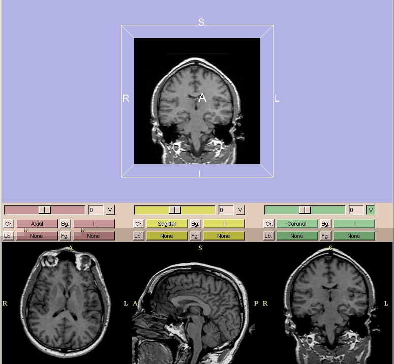
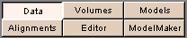
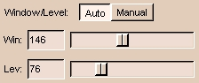
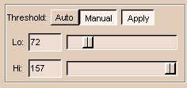
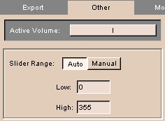
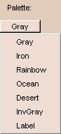
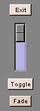
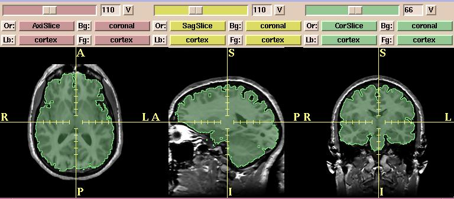

After loading volumes, you can optimize how you view them.
Slicer has multiple configurations to display volumes.
By default, the normal view is selected. In normal view, the viewer window is divided
into two sections.
The upper portion of the view
window shows the 3D formatted version.

In the lower quarter of the viewer window, a 2D multi-plane
formatted version of the volume is shown.
2D Window Controls
- There are three 2D windows (red, yellow, and green).
You can select both grayscale and label map volumes into each of the 2D windows.
For example, Slicer will automatically put the Axial grayscale volumes into the first (red) 2D window as the background layer.
- In each 2D window, the slider selects which slice of the volume to display.
The numerical field shows the slice number.
- The V toggle button controls whether the selected slice is visible in the 3D viewer or not. In the figure above, only the slice from the green window is visible in the 3D viewer.
- There is an Or (scan order), Bg (background), Fg (foreground),
and Lb (label map) button
for each of the three 2D windows.
- Use Or to change the scan order in each 2D window.
For example, you can use the Axial view in the first 2D window,
the Coronal in the second, and the Saggital in the third window.
Or you can use the Coronal view in the first and the other two views in the other two windows.
Or you can set each view individually, to suit your need.
- Use Bg to select which volume to put in the background layer.
- Use Fg to select a volume for the foreground layer,
which is superimposed over the background layer.
- Use Lb to select label map volumes for the label map layer,
to display results of a segmentation. Volumes loaded into the label map layer
will appear as outlines around the structures that were segmented.
(You can use Slicer to create label maps, and also to make models from them.)
- Use the Fade vertical slider (in the lower left of the Menu window)
to fade from the images displayed in the background (Bg) layer
to the images displayed in the foreground (Fg) layer.
This is useful for checking alignment or coverage of a label map, for example.
Adjusting Window/Level
By adjusting the Window/Level
of the volume, you can optimize displaying the region of interest of gray-scale volumes.
Adjust the Level value until the dark areas become barely
visible. Then adjust the Window value so that the bright areas are not
saturated into white. You may need to go back and forth to readjust until
you have optimally displayed your data.
To adjust the Window/Level of a volume:
- Click Volumes on the Main menu.

The Volumes
panel appears.
- Select the Display tab.
- From the Active Volume pull-down menu,
select a volume.

- Move the sliders, or click Auto,
to adjust the display properties of the volume.
Using Threshold to Display
By adjusting the Threshold of the volume, you can limit the display to labels whose values fall within the threshold range.
To adjust the Threshold of a volume:
- Click Volumes on the Main menu.
The Volumes
panel appears.
- Select the Display tab.
- From the Active Volume pull-down menu,
select a volume.

- Toggle Apply to apply or not apply the threshold. Apply is selected automatically if you select Auto, or move the Lo or Hi sliders.
- Move the Lo slider to the lower limit you want, or click Auto for automatic threshold.
- Move the Hi slider to the upper limit you want, or click Auto for automatic threshold.
To define the upper and lower limit of the Threshold sliders:
- Click Volumes, then click the Other tab. This tab appears.

- Select either Auto or Manual for Slider Range.
- Enter values for the Low and High values of the Slider Range.
Color Palette
You can select a color scheme to colorize your gray-scale
volume.
This can help you distinguish different regions of interest better.
Use the Palette pull-down menu (on the Display tab of the Volumes
panel) to select one of seven available color schemes:
Gray, Iron, Rainbow, Ocean, Desert, InvGray, or Label.

Image Fusion
Use the Fade vertical slider (in the lower left of the Menu window)
to fade from the images displayed in the background (Bg) layer
to the images displayed in the foreground (Fg) layer.
This is useful for checking alignment or coverage of a label map, for example.

In the example below,
the images in the background are grayscale (non-brain) images and the images in
the foreground are label map or segmented (brain) images.
